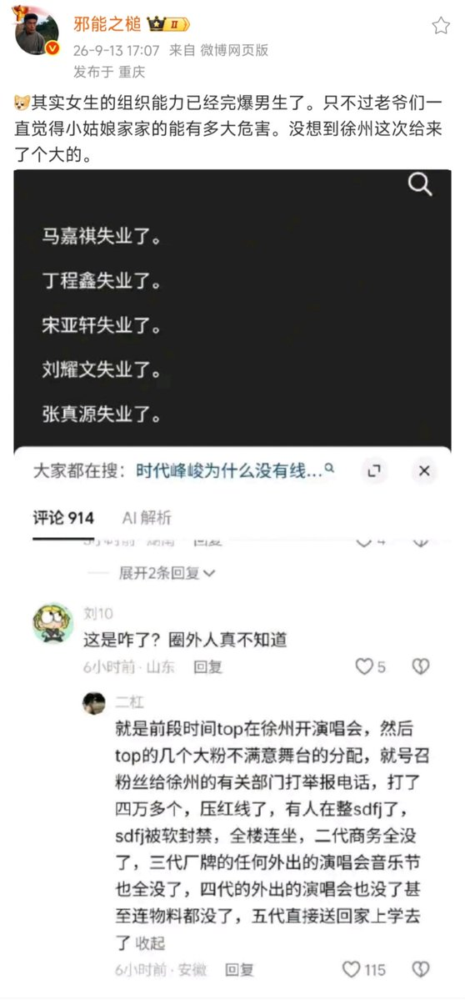

他记得有一次他在一条拥挤的街上走，突然前面一条横街上有几百个人的声音——女人的声音——在大声叫喊。这是一种不可轻侮的愤怒和绝望的大声叫喊，声音又大又深沉，“噢——噢——噢！”，就象钟声一样回荡很久。他的心蹦蹦地跳。开始了！他这么想。发生了骚乱！无产者终于冲破了羁绊！当他到出事的地点时，看到的却是二三百个妇女拥在街头市场的货摊周围，脸上表情凄惨，好象一条沉船上不能得救的乘客一样。原来是一片绝望，这时又分散成为许许多多个别的争吵。原来是有一个货摊在卖铁锅。都是一些一碰就破的蹩脚货，但是炊事用具不论哪种都一直很难买到。卖到后来，货源忽然中断。买到手的妇女在别人推搡拥挤之下要想拿着买到的锅子赶紧走开，其他许多没有买到的妇女就围着货摊叫嚷，责怪摊贩开后门，另外留着锅子不卖。又有人一阵叫嚷。有两个面红耳赤的妇女，其中一个被头散发，都抢着一只锅子，要想从对方的手中夺下来。她们两人抢来抢去，锅把就掉了下来。温斯顿厌恶地看着她们。可是，就在刚才一刹那，几百个人的嗓子的叫声里却表现了几乎令人可怕的力量！为什么她们在真正重要的问题上却总不能这样喊叫呢？
